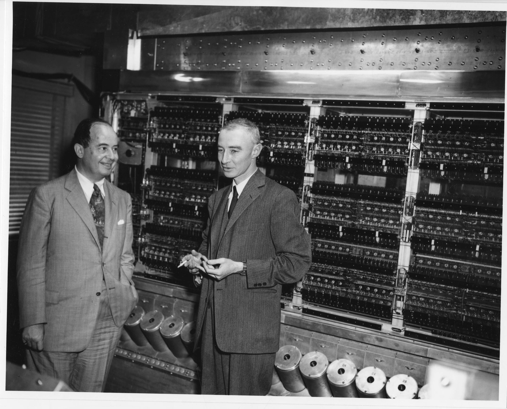

Las Primeras Computadoras 3
- Calculadoras de Von Neumann:
- John Von Neumann (1903-1957):
1.946 "First Draft of a Report on to Edvac“ Principios ordenadores del tipo Von Neumann:
- Concepto de numeración codificada.
- Almacenamiento del programa en memoria.
- Perfeccionamiento de la ruptura de secuencia.
- EDSAC (1.949)
M. Wikes, de la Universidad de Cambridge.
- UNIVAC (1.951)
Eckert y Mauchly, primera computadora adquirida con fines lucrativos.
- Calculadoras de Von Neuman
